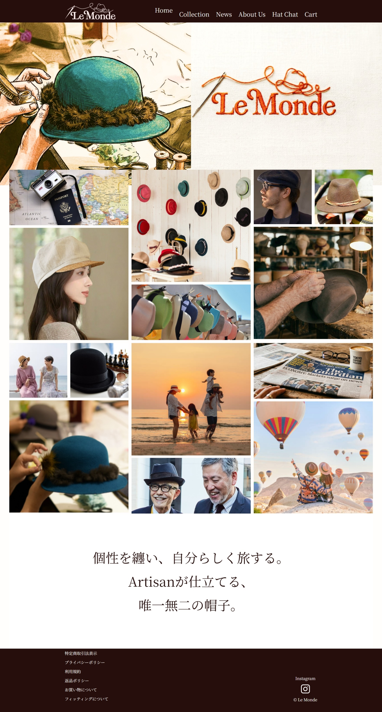
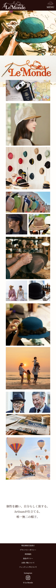
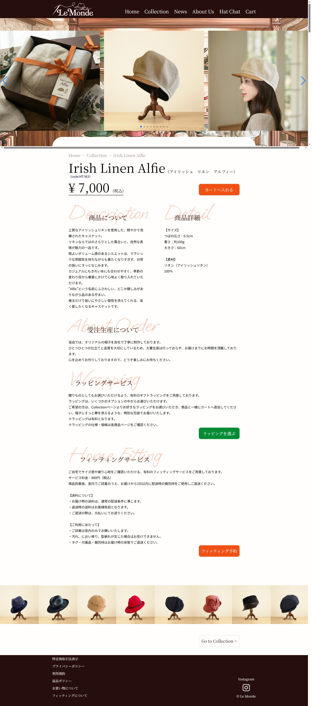
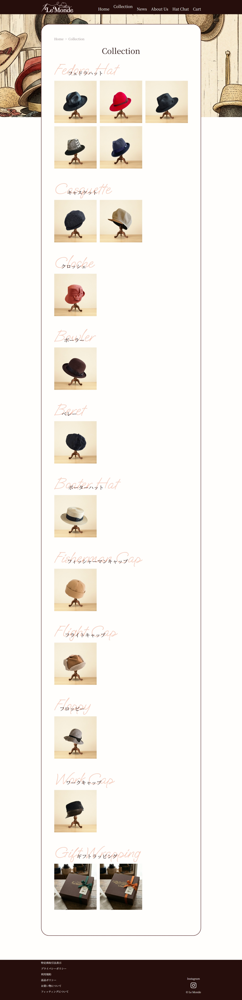

グループ制作 オリジナル帽子専門店 オフィシャルECサイト（架空） - Le Monde -

| 使用技術 | HTML / CSS / JavaScript / GIMP / Figma |
|---|---|
| 作業箇所 | collectionコーディング / news-topコーディング GIMPにて画像編集 |
| 制作期間 | 3週間（2026年3月～4月） |
制作の概要・目的
職業訓練の2回目のグループ制作課題として、これまでInstagramのみで情報発信を行っていた、オリジナル帽子専門店のオフィシャルサイトを新規立ち上げという設定で制作しました。幅広い世代のお客さまへの信頼感を確立すること、 tender「高品質な一点もののため納期に時間がかかる」というブランドの特徴を正しく伝え、納得して購入してもらうことを目的としています。
デザインのこだわり
商品の高級感と上質さを伝えるため、全体を白ベースのシンプルで洗練されたレイアウトにしました。ヘッダーとフッターには温かみのあるライトブラウンを採用し、国産生地の持つナチュラルな上質さと、帽子屋としての信頼感を表現しています。
成果と学び
2回目のグループ制作として、技術面・チーム連携面ともに大きな成長を実感できた制作となりました。
-
デザイン・画像加工のスキルアップ
商品一覧の画像加工を担当。ただ写真を並べるのではなく帽子ラックに載せる演出を取り入れました。ラックに自然に馴染むよう、影の付け方や絶妙な「角度」にこだわり何度もレタッチを重ねることで、商品の立体感や自然な設置感を表現するスキルが身につきました。
-
コーディングの効率化とUIの工夫
1回目の経験を活かし、格段にスムーズにコーディングを行えました。全世代が直感的に楽しめるよう、商品へのホバー時にスムーズなアニメーションで商品名が表示されるエフェクトを実装するなど、ユーザー視点のUI設計を意識できました。
-
チーム開発における課題解決力
メンバー間のデザインへのこだわりから意見が衝突し、スケジュールが遅れる課題に直面しました。しかし「ユーザーにとっての見やすさ」という共通ゴールに立ち返ってロジカルに話し合い、タスクを再分配することで納期内にクオリティの高いサイトを完成ました。
単にコードを書くだけでなく、デザインの意図を汲み取る重要性や、チーム開発におけるコミュニケーションと柔軟な軌道修正力を学ぶことができた貴重な経験です。



